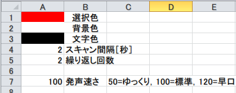
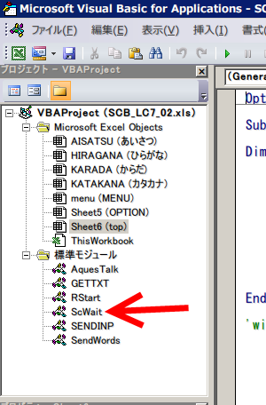

かならずお読みください →

しゃべる文字盤のつくりかた
TIPS_4 一定時間を保つ方法

スキャン入力方式のコミュニケーションエイドでは、いくつかの選択肢を順に提示し、一定時間スイッチ入力を待ちます。この間にスイッチが押されるとその選択肢が選ばれたと判断し、文字を入れるなどの所定の動作をします。また押されなければ次の選択肢を提示してスイッチの入力を待ち、以下順次これを繰り返します。
このように手間のかかる方法が使われる理由は、お使いになる人の意思表出の手段が麻痺などのため大変限られているからです。シンプルなスイッチだけでいくつかの操作を使い分けるため、タイミングのルールを利用しているのです。つまり同じスイッチではあっても、このタイミングならこのはたらき、別のタイミングなら別のはたらきと使い分けるルールです。このため、タイミングを待つのに時間や手間がかかり、またタイミングをとるための機敏なスイッチ操作も必要という特徴をもつことになりました。
しばしばこれが十分理解されず、スイッチさえ押せればコミュニケーションエイドができると考えられがちですので注意が必要です。タイミングを合わせる練習は、まずスキャン間隔をいくらか長めにして始め、上達に合わせて徐々にこれを短くするのが基本です。 主な市販機の伝の心もレッツチャットもスキャン間隔が最大８秒まで設定できます。
参考 市販コミュニケーションエイドの設定 機種 スキャン時間 伝の心 0.4, 0.5, 0.75, 1, 1.25, 1.5, 1.75, 2, 2.5, 3, 4, 5, 6, 7, 8 秒 レッツチャット 0.2?8秒の間で 13段階 「今だ」と思ってから8秒以内にスイッチを押せる場合は、これらの道具を使ってさっそく練習を開始することができるでしょう。またおそらく多くの人はこのグループに含まれることでしょう。しかしなかには８秒では足りない人もいます。
例えば、長期間不活発な生活が続いていたり、薬の作用などで気分がはっきりしていないとか、気持ちが集中苦手といった場合には、タイミングを合わせたスイッチ操作がうまくいかないこともあります。またコミュニケーション困難になりやすい、とある病気でもまたこれらが難しくなることがあります。
8秒で足りないなら10秒で、10秒で足りないなら12秒で練習するのが基本です。ほとんどの人がこの様な取り組みは初めてで不慣れで思うようにいきません。ですから体調に配慮しながら、取り組み方や使う道具などに工夫して状態の改善と安定をある程度時間をかけて見守りたいものです。くれぐれも精神的に参っている人の取り組みの出鼻をくじかないようにしたいものです。しかしこの練習に8秒が上限の伝の心やレッツチャットは適していません。
一方で『この道具しかないからこれを使うしかない』とか、『存在しない道具の議論をしても時間の無駄だ』というご意見も現場などにありますが、コミュニケーションエイドなどの機械は何の遠慮もなく結果を出し、『できない』現実をはっきり何回でも突きつけます。
がんばってもなかなかうまくいかないと患者さんの気持ちがどんどん落ち込み、かなりお気の毒な状態になります。 また周囲がこれを見て、あからさまに反応したり、早々と結論へ気を回し始めると、ご本人もついついあきらめがちになります。
これではいったい何のために練習しているのでしょう？この場面では簡単に準備できる道具を使って、練習をしながらしばらく様子を見る取り組みを始めたいところです。 このような経験を踏まえて、しゃべる文字盤ではスキャン時間間隔をかなり長く設定できるようにしました。
このページでは、一定の時間を保持する方法について説明します。
しゃべる文字盤では、ScWaitという名の標準モジュールがあります。これがスキャン時間の調整とその間に押されたスイッチやキーの判定の役割をしています。Option Explicit Declare Function PlaySound Lib "winmm.dll" Alias "PlaySoundA" _ (ByVal lpszName As String, ByVal hModule As Long, ByVal dwFlags As Long) As Long Declare Function GetAsyncKeyState _ Lib "user32.dll" (ByVal vKey As Long) As Long Declare Sub Sleep Lib "kernel32" (ByVal dwMilliseconds As Long) Public FSw As Boolean Public ESCsw As Boolean Sub ScanWait(Wsec As Single) 'スキャン時間制御サブルーチン Dim RSTime As Single '再開時間 Do While Timer > 86395 'TIMER関数の真夜中の不具合を回避するため、直前５秒間停止する DoEvents Sleep 200 ' CPU負荷軽減のためSleep(200ms)API関数 Loop RSTime = Timer + Wsec Do While Timer < RSTime DoEvents Sleep 50 ' CPU負荷軽減のためSleep(50ms)API関数 If GetAsyncKeyState(vbKeyF9) <> 0 Then FSw = True PlaySound "c:\windows\media\windows ding.wav", &H0, &H0 '同期で音を鳴らす End If If GetAsyncKeyState(vbKeyEscape) <> 0 Then ESCsw = True PlaySound "c:\windows\media\chord.wav", &H0, &H0 '同期で音を鳴らす End If Loop End Sub
3-4行 PlaySoundの宣言文です。音を鳴らす際に使います。
5-6行 GetAsyncKeyStateの宣言文です。キー入力を感知します。
7行 WindowsAPI、Sleepの宣言文です。
10-11行 f9キーとESCキー操作記録のための変数
17-20行 午前零時のTimer関数切り替わりの際、23行の不具合対策として5秒間動きを止めます。
23-37行 Do-Loopの間を繰り返し実行します。
27-30行 GetAsyncKeyStateでf9が押されたか判定し、押されたならばfswをTrueにしてwindows ding.wavを鳴らします。
17-20行 GetAsyncKeyStateでESCが押されたか判定し、押されたならばESCswをTrueにしてchord.wavを鳴らします。

しゃべる文字盤では上記のSubを、ScWaitという名称の標準モジュールとして設定しました。（上図赤矢印） これにより、文字盤が何枚あっても『待ち』が必要な場合で、下記のように呼び出して利用できるようにしました。Call ScanWait(Intervals)
ここで、引数のIntervalsは、（Intervals は Singleで宣言）待ち時間を秒で指定します。1秒なら1，10秒なら10です。
最短時間は、0.001秒です。しかしソフト的には1000分の1秒単位で指定できますが、プログラムが精度良く動くわけでも、その違いが人間にわかるわけでもありませんので、ここで細かい数字に意味はありません。 また最長時間は3億4千万の後ろにゼロがさらに22個つく年数です。（余談ですが、ホーキング博士の宇宙の本にはこのような表現がよくでてきます。）もちろんこの大きな数字にも意味はありません。いずれにせよスキャン時間が、短すぎるとか長すぎるといった問題はこれでひとまず解決できそうです。時間計測関係、スイッチ判定関係、バイオフィードバックの機能をこの標準モジュールに集中させました。この結果、メンテンナンスが楽になり、新しい文字盤作りの手間がすくなくなり、さらに他のソフトへの移植も容易になりました。
しゃべる文字盤の開発初期には、
newHour = Hour(Now()) newMinute = Minute(Now()) newSecond = Second(Now()) + Intervals Waittime = TimeSerial(newHour, newMinute, newSecond) Application.Wait Waittimeといった方法でスキャン時間を設定していました。
しかしこの方法では、コンマ１秒単位など細かな時間設定ができません。また小数点以下を丸めるためか、スキャン時間間隔がふらつくこともありました。
以上のような不都合を改善するため現在のtimer関数を使う方法に変更しました。
また、考え事や休憩等のあいだも画面表示が動き続けたりピコピコと音が出続けたりしては、気も休まりません。指定回数スキャンしたら自動的に動作を停止させる機能が伝の心やレッツチャットにはありますので、しゃべる文字盤にも同じ機能をつけましたが、これも上で紹介した方法を応用しています。
' スリープのループ Do DoEvents Sleep 20 ' CPU負荷軽減のためSleep(20ms)AIP関数 If GetAsyncKeyState(vbKeyF9) <> 0 Then FSw = True PlaySound "c:\windows\media\windows ding.wav", &H0, &H0 '同期で音を鳴らす End If If GetAsyncKeyState(vbKeyEscape) <> 0 Then ESCSw = True PlaySound "c:\windows\media\chord.wav", &H0, &H0 '同期で音を鳴らす End If If FSw = True Then Exit Do End If If ESCSw = True Then Exit Do End If Loop基本的な形はほとんど同じです。
Loopを回し、スイッチ操作を監視し、スイッチが押されたらLoopからぬけます。 表示も音も止まり、まるで止まっているようですが、スイッチが押されるのを見張り続けています。 このように、待つ機能はさまざまな用途に広く応用でき、しゃべる文字盤のプログラムは稼働中の多くの時間をこの待つLoopを動かしています。またこの地味な部分をつくるのにもなかなか手間がかかりました。
ある日、『とても状態がよくないこの人にコミュニケーションの可能性があるか検討せよ』というかなり難しいオーダーが寄せられました。
はじめて会った時、その方は『石仏』のようでした。見えているか聞こえているか分かっているかわかりませんでした。
その後、随意運動を探すため、こえかけをしながらあちこち動かしてもらいました。しかし、動きは少なく、力は小さく、さらに声をかけてから動くまで、一分近くかかることありました。
こうなるとこの動きがこえかけの結果なのか判断にも困ります。
ＰＰＳをつかって、
「○○さーん返事して」………（この間１分くらい）……… ピ
この方との出会いも、しゃべる文字盤の開発のきっかけになりました。
まとめ
しゃべる文字盤導入編1‐5に引き続き、しゃべる文字盤のつくりかた、TIPS編1‐4をお送りしました。
TIPS編1‐4で説明した方法を利用すると、コミュニケーションエイドの基本的なスキャン動作が自由に作れるようになります。
自分でつくったプログラムが目に見える、耳に聞こえるかたちで動くと、作り手のモチベーションも上がるほか、使い手との意見やニーズをすり合わせる場面で、より具体的で実のあがるお話し合いができることと思います。
また、新しいアイデアや取り組みを進める際にも、より具体的な議論の土台となるでしょう。基本的な話は今回で一区切りをつけ、 次回からは、より応用的な機能について説明していきたいと思います。
2014/7/18 公開研究企画課リハ工学科にもどる